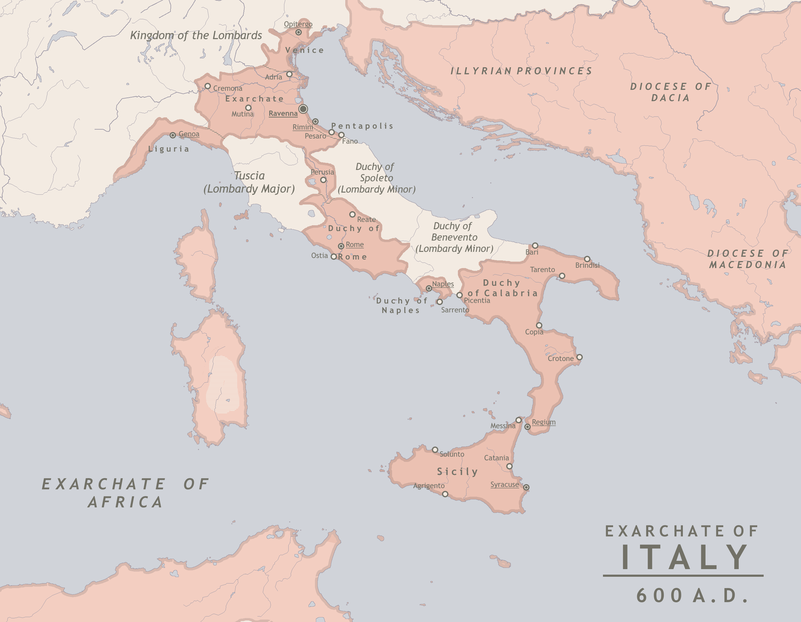
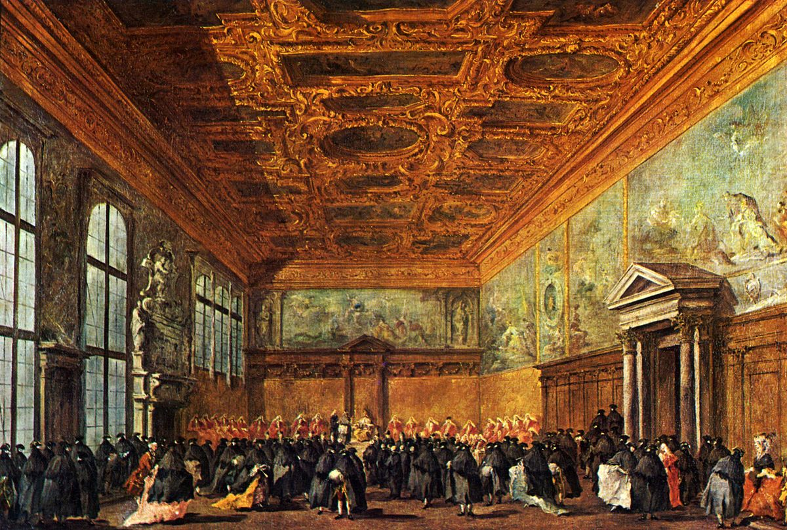
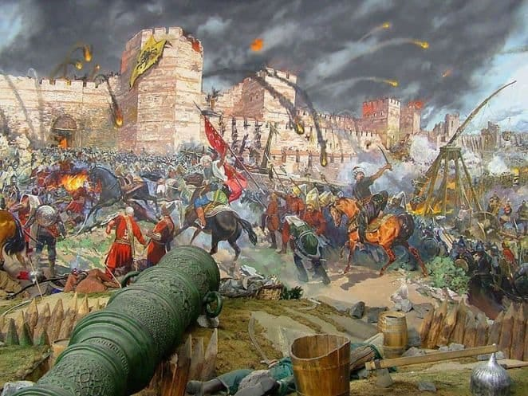
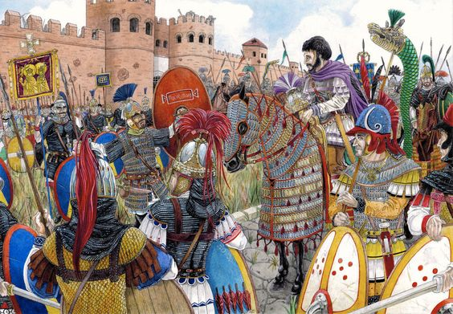
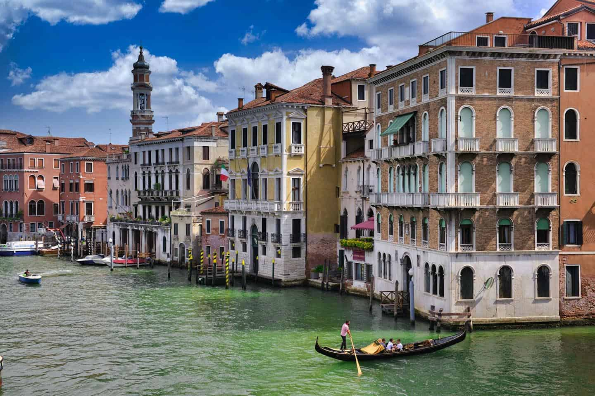

Islands which would become Venice in the Byzantine empire became part of the exarchate of Ravenna in 584.
Orso, the first doge (duke) was elected in 727 but was followed by Byzantine rulers until 751 (Ravenna ended).

Venice was formed, doges were elected, and a church for St. Mark was finished in 1070.

The Byzantine city Oderzo fell in 641, and one of the Venetian islands gained political authority.

A doge and his brother freed themselves from the Byzantines. Strife followed for several hundred years.

Venice became a powerful trade city, then converted to a democracy, and eventually became part of Italy like it is today.